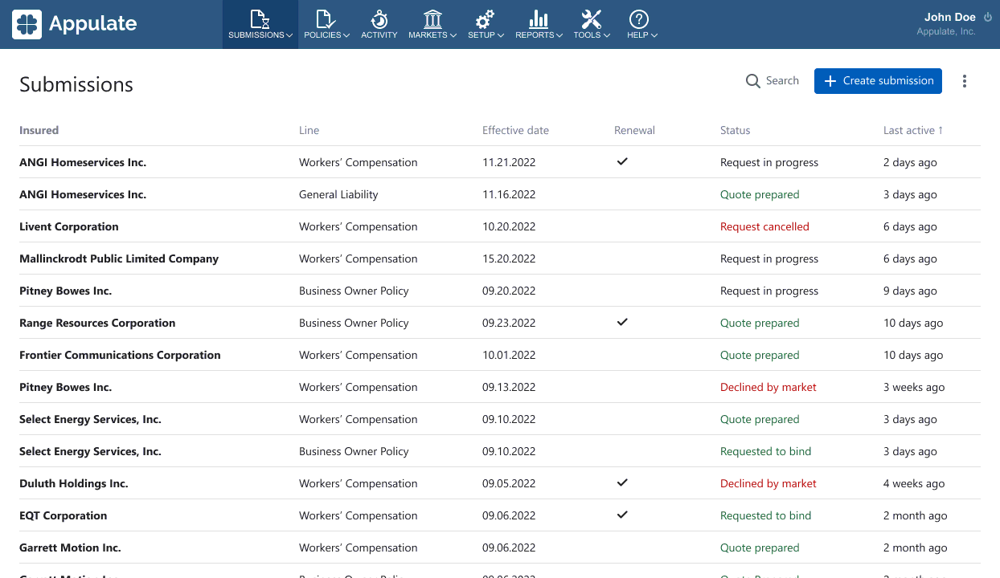
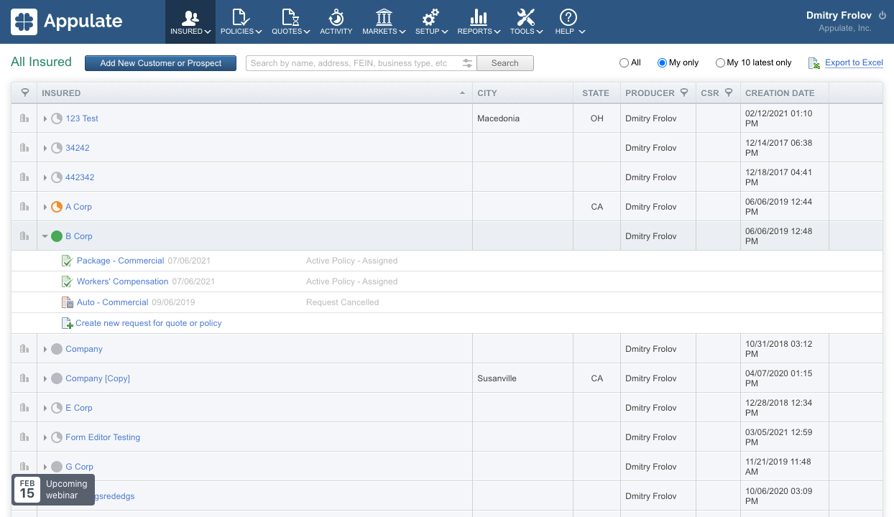

US InsureTech which helps insurance people quote and bind business insurance policies.

I have redesigned the agent's workflow, now it consists of two steps:
The former workflow was complicated, agents often got lost, and couldn't find information and figure out what to do next. The new one has become more linear and step-by-step.
Previously, the agent's main page had a list of insured with submissions nested in them. Because of this hierarchy, it was difficult to quickly find the right submission.

After conducting research with analysts, we found out that usually the insured have one submission. Therefore, I took out a submission on the main page and made the insured name their parameter.
Due to the changes on the main page, the process of creating a submission has been simplified.
Previously, the creation of insurance started automatically after adding a client. The agents did not understand how to create another submission from the same insured and where to look for it after creation.
Now the insurance is created in one step. The client's page is no longer there, and the data from it is displayed on the submission page.
My team and I hope that now agents will find insurance faster and the failure rate will decrease.
After the insurance is created, the agent requests a quote from insurance companies. A quote is a document with the terms and premium of insurance, if they are suitable for the agent's client, the binding procedure will start.
Previously, the agent first chose the markets. Their questions were automatically merged into a single form. After filling it out, the agent requested quotes from several markets at once.
This approach had problems:
After observing the work of the agents, we concluded that it was better to make the agent request quotes from the markets one at a time.
Advantages of the new approach: